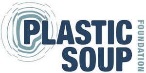

Trade Mark Journal No.2025/018 2 May 2025
UK00004186136 8 April 2025 (36,41,42,44)

- Class 36
- Financial services; Fundraising and sponsorship; Fund management; Fundraising for charitable purposes; Organising cash collections; Tax services [not accounting].
- Class 41
- Education; training; entertainment; sports and cultural activities; education; Provision of training, education and schooling; Organisation and holding of conferences and seminars; Information in the field of education; Organisation of lectures; Publishing of electronic publications; Organisation of exhibitions for educational purposes; Performance of cultural events; Production of sound and music recordings; Production of sound and video recordings; Publishing newspapers, periodicals, catalogues and brochures; Education in the field of environmental management; Educational services in the field of health (Provision of -); Education in the medical field; Education in the field of industry.
- Class 42
- Environmental advice; Provision of scientific information in the field of climate change; Collection of environmental information; Scientific research in the field of environmental protection; Environmental protection (Advice on -); Compilation of information related to environmental conditions; Provision of technological information on environmentally conscious and green innovations; Environmental testing; Environmental impact assessment services; Consultancy related to environmental protection; Environmental testing and environmental inspection services; Environmental testing for detection of pollutants in water; Climate change research; Research in ecology; Water analysis; Consultancy related to pollution control; Laboratory services; Scientific and technological services; Industrial analysis and industrial research services; Testing, authentication and quality control; Health research.
- Class 44
- Medical services; Nutrition counselling; Pharmaceutical counselling; Public health counselling; Health risk assessment studies; Agricultural, horticultural and forestry counselling; Agricultural services; Medical analysis services; Health services.
Stichting Plastic Soup Foundation
Representative: Hansel Henson Limited